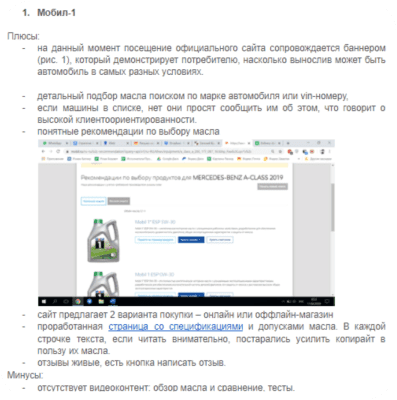

После чего внимательно изучили конкурентов на предмет их сильных-слабых сторон и преимуществ.
И внимательно изучили их сайты.

Конкуренты:

Addinol
немецкий бренд моторных масел
Было сделано:
Компания Addinol — компания-производитель смазочных материалов для автомобилей.
Широко известные на местном рынке в Германии (бренду более 80 лет), в России компания уступает позиции лидерам рынка.
Перед нами были поставлены задачи по разработке сайта и планированию рекламной кампании.
Начали мы с маркетинговой стратегии...
В связи с отсутствием внутренней аналитики рынка, мы провели собственные кабинетные исследования — для понимания, чем живет рынок на момент создания стратегии (2020 год): какие доли рынка у основных игроков, а также какие тренды и специфика у российского рынка.
Кроме того, важно было понять структуру потребления
по типам масел, чтобы учесть эту информацию на сайте.
Получилась следующая картина.
Распределение потребления по типам моторных масел
для легковых автомобилей
По рекомендациям автопроизводителей
По результатам опросов автовладельцев
Узнаваемость марок моторных масел
Предпочтения автовладельцев
После чего внимательно изучили конкурентов на предмет их сильных-слабых сторон и преимуществ.
И внимательно изучили их сайты.
Конкуренты:
Путем кабинетных исследований получше узнали целевой партрет клиента:
Самые интересные выводы мы сделали при анализе степени осознанности при покупке.
Знаете ли вы марку моторного масла, которое залито в ваш автомобиль?
По данным исследованиям, автовладельцы в равной степени как осознанно выбирают моторное масло для автомобиля, так и пользуются советами работников сервисных центрах, друзей.
Большинство респондентов (78%) знают, моторное масло какого производителя залито в двигатель их автомобиля в настоящий момент. Оставшиеся 22% затруднились с ответом, т. к. меняли масло на автосервисе и не знают марку, или покупали масло самостоятельно, но бренд не помнят.
Благодаря проведенным исследованиям, мы смогли понять путь отстройки от конкурентов.
В итоге, мы пришли к мысли, что аудитория покупателей моторного масла делится на 2 больших сегмента:
Первый - это те, кто не разбирается при покупке и доверяют выбор масла другим, либо проникшись имиджем или рекламной кампанией того или иного бренда.
Второй - это люди, которые покупают масло сами, руководствуясь своими знаниями, осознав его преимущества.
Мы определили второй сегмент,
как приоритетный для нас.
Этому поспособствовало несколько причин:
Первая причина.
Большинство компаний-лидеров, как показал конкурентный анализ, не сильно заботятся об аудитории людей, который обращают внимание что именно заливается в их любимый автомобиль.
Анализ же ЦА подтвердил гипотезу сегмента, которого не устраивает качество масел, и которые находятся в поисках менее «попсового», но более качественного масла.
Пускай даже и за бОльшую стоимость (учитывая потенциальные затраты на ремонт двигателя) и от малоизвестного ему бренда.
Вторая причина.
Немецкое качество. В Addinol проведено много клинических испытаний качества продукции, но аудитория о них не знает.
Здесь можно смело доказывать конкурентное преимущество именно в качестве, подкрепляя информацию научным обоснованием.
Тем самым, мы определили самую интересную для нас аудиторию:
после выводов в исследовательской части мы приступили
к проработке бренд-платформы
В итоге, в позиционировании мы сделали акцент на трех вещах:
Экологичность продукта
за счет усовершенствованной технологической базы и уникальной формулы
Премиальность масла
отстройка от конкурентов за счет более высокой доказательной базы и более высоком качестве продукции — «немецкое качество»
Доказательная база
исследования, обзоры, отзывы
На этих столпах мы и предложили клиенту формировать все маркетинговые активности:
После чего сделали медиаплан и очертили инструментарий на ближайший год
А также реализовали интернет-магазин (нынешний внешний вид может отличаться от первичной версии сайта):
https://addinol24.ru/И что в итоге?

В данный момент компания занимается самостоятельным ведением рекламной кампании — в компании большой отдел маркетинга.
В наши задачи входили только стратегическое планирование и подготовка it-инфраструктуры.